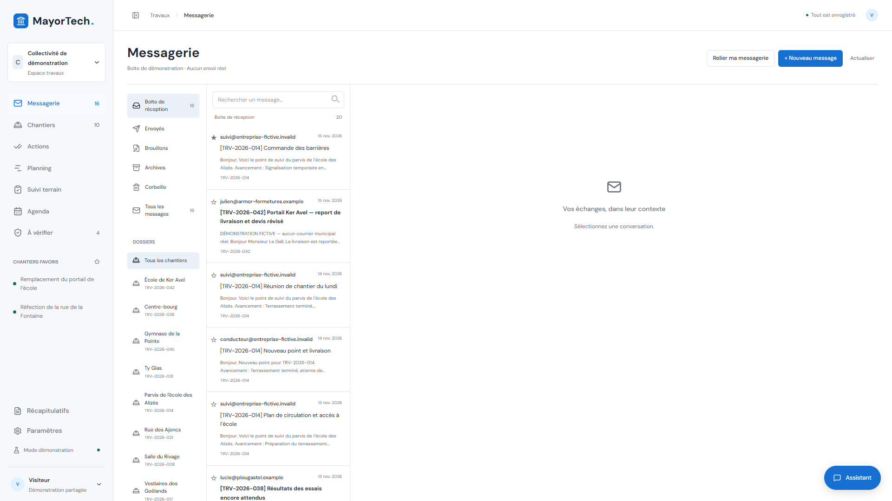
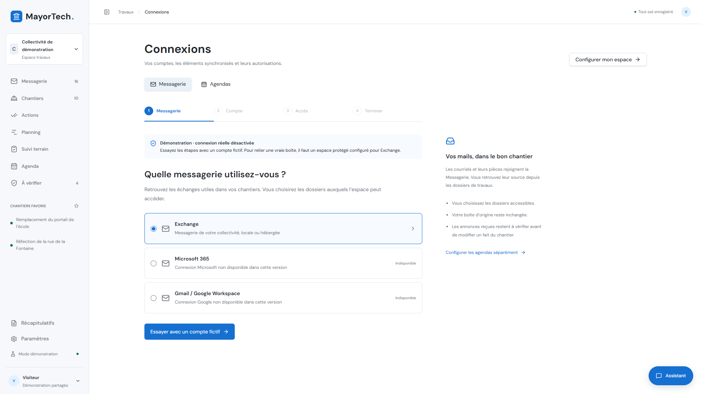
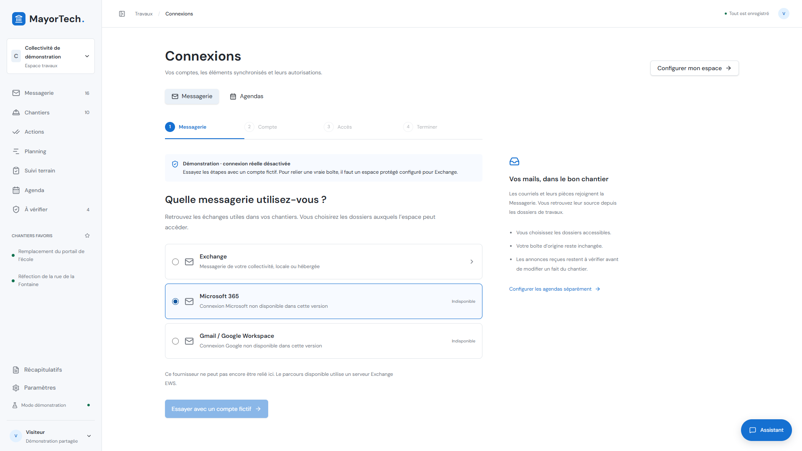
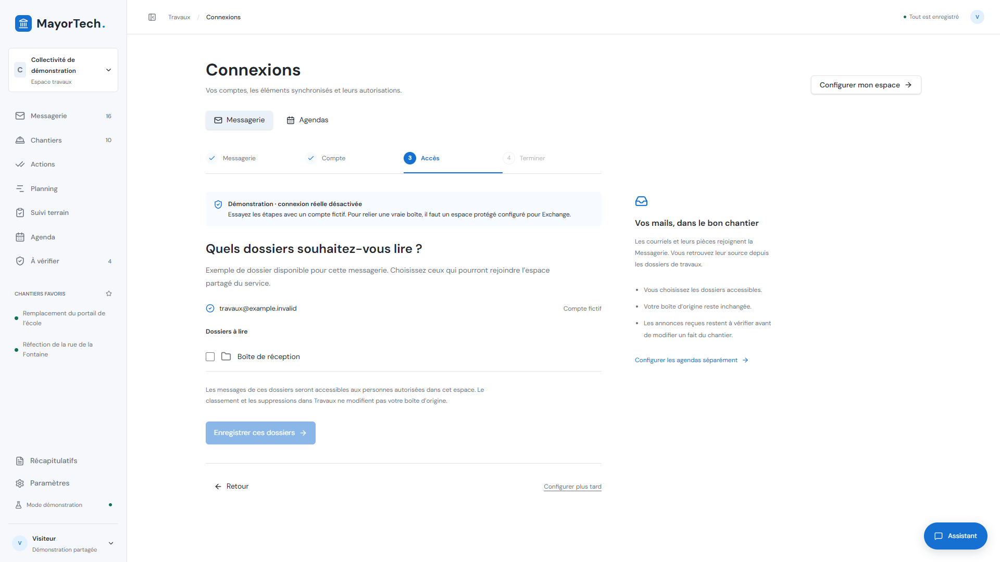
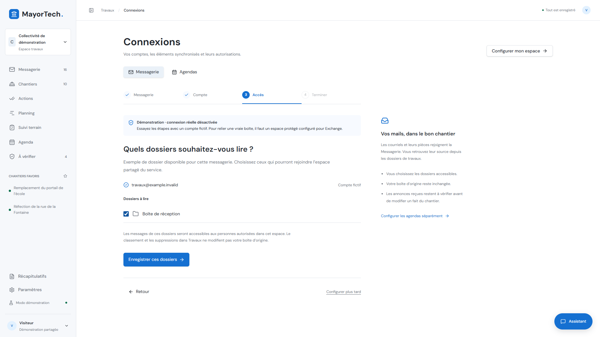
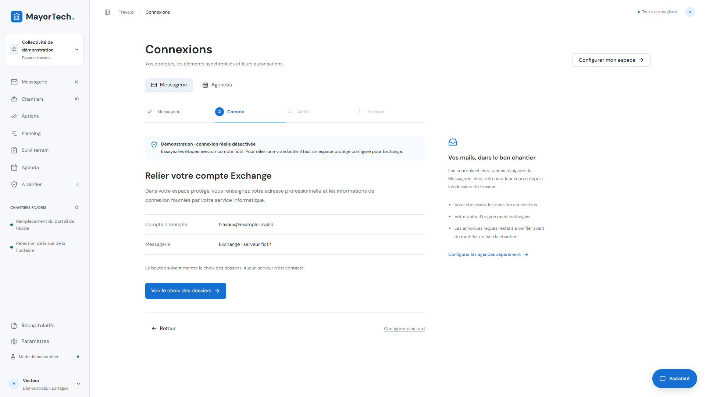
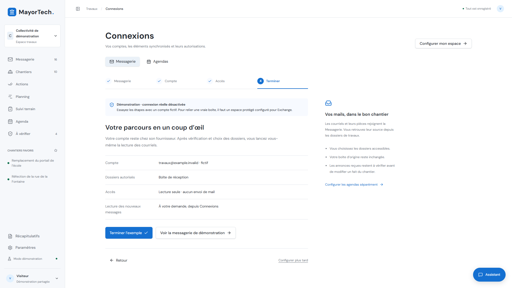
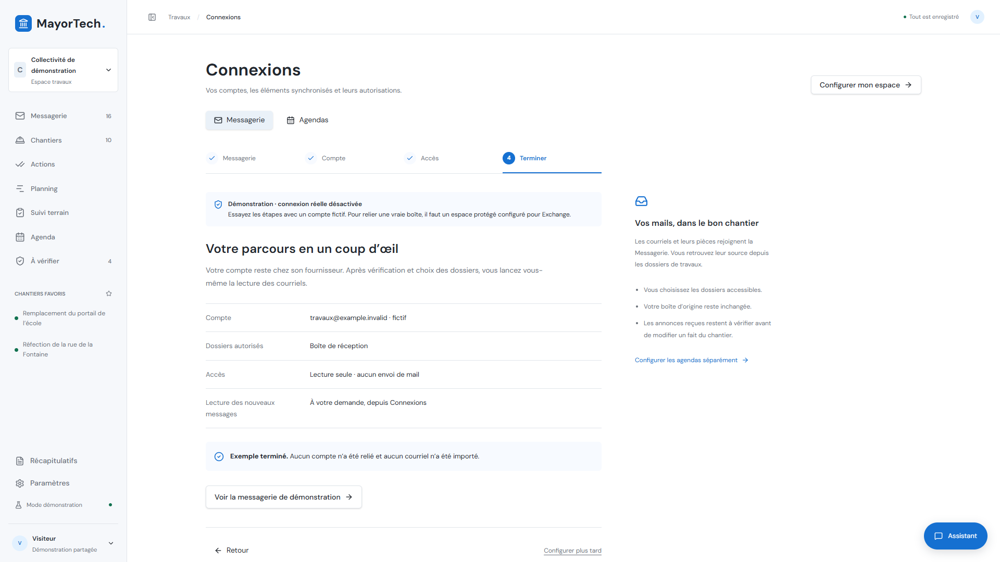

Workflow mail — test en Full HD
16 novembre 2026 · version 0.8.1 · 1920 × 1080 à chaque capture. Cliquez sur une image pour ouvrir le fichier original.
Le site public reste une démonstration : aucun raccordement réel disponible sur ce lien.
Le parcours privé ci-dessous utilise un lecteur Exchange fictif avec la vraie API de l’application ; aucun compte institutionnel n’a été connecté.
Démo publique publiée

1. Point de départ : Relier ma messagerie dans la Messagerie publiée.1920 × 1080 · Télécharger
2. Le site propose un parcours de démonstration avec un compte fictif.1920 × 1080 · Télécharger
3. Microsoft 365 est sélectionnable pour information ; la connexion reste indisponible.1920 × 1080 · Télécharger 4. Étape Compte : adresse fictive, aucun test réseau ni identifiant réel.1920 × 1080 · Télécharger
4. Étape Compte : adresse fictive, aucun test réseau ni identifiant réel.1920 × 1080 · Télécharger
5. Sans dossier coché, la progression est bloquée avec le bouton désactivé.1920 × 1080 · Télécharger
6. La réception fictive est sélectionnée ; le parcours peut continuer.1920 × 1080 · Télécharger 7. Récapitulatif des accès de l’exemple avant sa fin.1920 × 1080 · Télécharger
7. Récapitulatif des accès de l’exemple avant sa fin.1920 × 1080 · Télécharger 8. Fin explicite : aucun compte relié, aucun mail importé.1920 × 1080 · Télécharger
8. Fin explicite : aucun compte relié, aucun mail importé.1920 × 1080 · Télécharger
9. Retour dans Compte après un exemple terminé : vérifier titre et données présentées.1920 × 1080 · Télécharger
10. Second passage dans Terminer : vérifier que l’exemple est à nouveau terminable.1920 × 1080 · Télécharger
11. Le second passage se termine à nouveau, sans perdre le choix du dossier.1920 × 1080 · TéléchargerParcours privé avec lecteur Exchange fictif
Rapport détaillé · Dimensions et empreintes